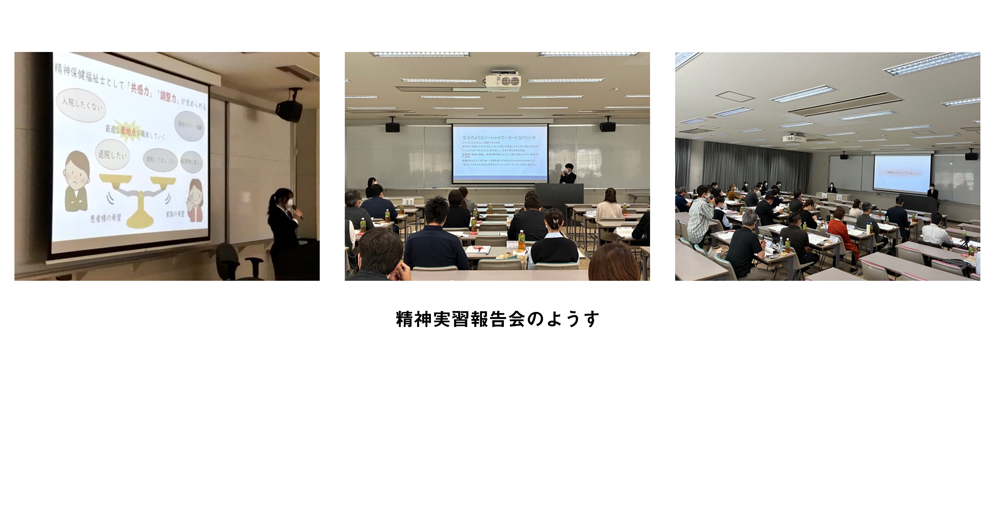

精神保健福祉士とは？
精神保健福祉士は、精神科病院その他の医療施設において精神障害の医療を受け、精神障害者の社会復帰の促進を目的とする施設を利用している人の地域相談支援の利用に関する相談や社会復帰に関する相談、精神保健に課題をかかえる者の相談、利用者の望む生活の実現に向け、一緒に方法を考え、目標達成に向けた計画を作成するとともに、必要に応じ専門的な助言、指導、日常生活への適応のために必要な訓練その他の援助を行います。
また、誰もが暮らしやすい地域づくりに向けた活動にも関与します。
毎年多くの学生が国家試験に合格しており、卒業生が県内・県外で活躍しています。（社会福祉士学校に関する情報開示）
医療機関：精神科病院、総合病院の精神科、精神科・心療内科クリニックなど
行政機関：自治体、保健所、精神保健福祉センター、福祉事務所など
その他：障害福祉サービス事業所、また児童養護施設、高齢者福祉施設、保護観察所、矯正施設、教育機関、企業など
精神保健福祉士養成課程開始までのスケジュール
| 学年 | 内容 |
| 1～3年生 | 社会福祉士国家試験受験資格科目・精神保健福祉士国家試験受験資格科目を履修 |
| 2年生2月 | ソーシャルワーク実習Ⅰ実施 |
| 3年生8月 | ソーシャルワーク実習Ⅱ実施（5日間） |
| 3年生後期： | 精神課程履修希望者申し込み開始 課程履修希望者説明会 面談 合格発表 |
| 4年生： | 精神保健福祉士養成課程開始 |
精神保健福祉士養成課程開始後のスケジュール
| 時期 | 内容 |
| 5月 | 実習事前協議会（実習事前協議会を開催｜福祉社会学部｜IUK NEWS） 見学実習（3箇所） |
| 6月 | 障害サービス事業所実習（8日間） |
| 7月 | 見学実習（3箇所） |
| 8～9月 | 精神科病院実習（精神保健福祉援助実習（事業所・病院）を実施｜福祉社会学部｜IUK NEWS） |
| 11月 | 精神実習報告会精神保健福祉士養成課程 実習報告会・事後協議会を開催｜福祉社会学部｜IUK NEWS |
| 2月 | 国家試験（社会福祉士・精神保健福祉士） |
